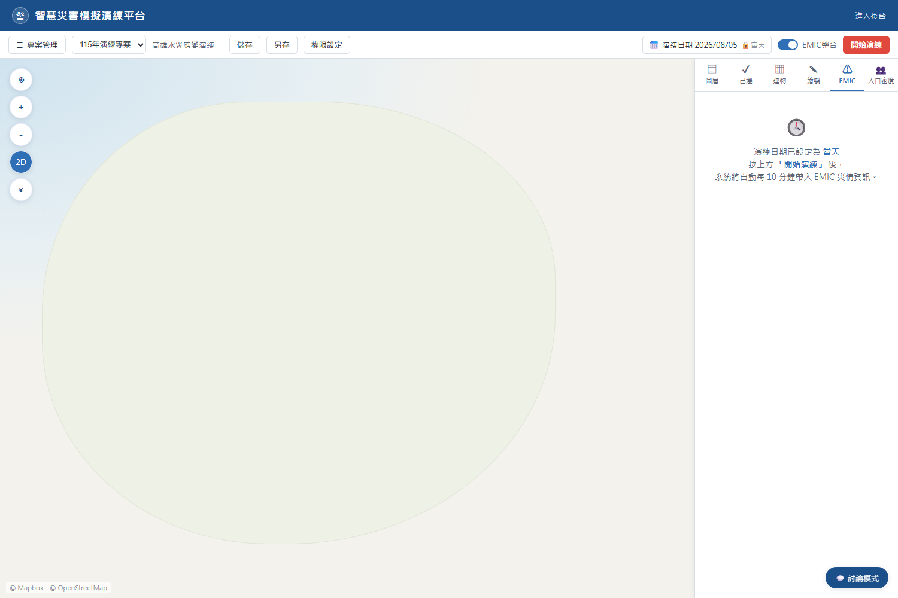
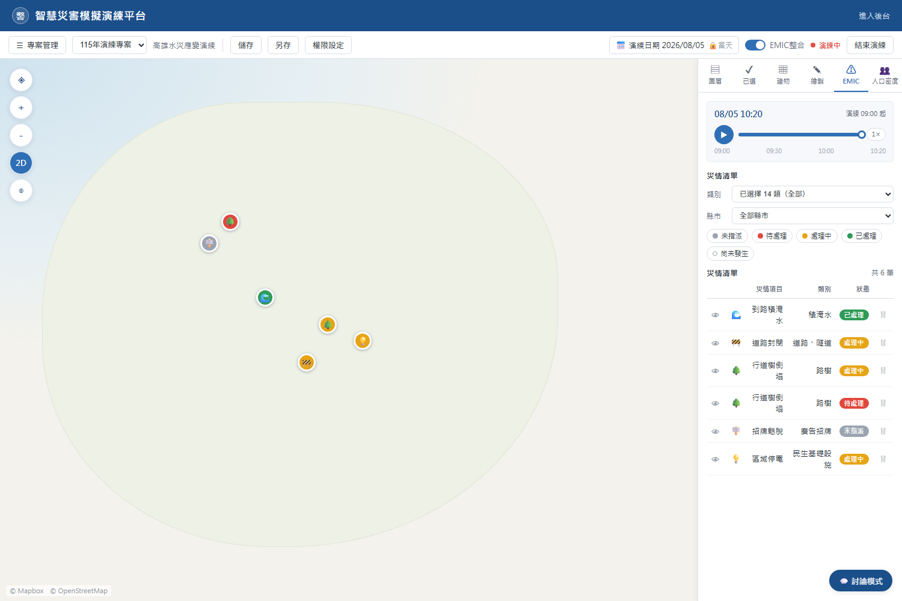
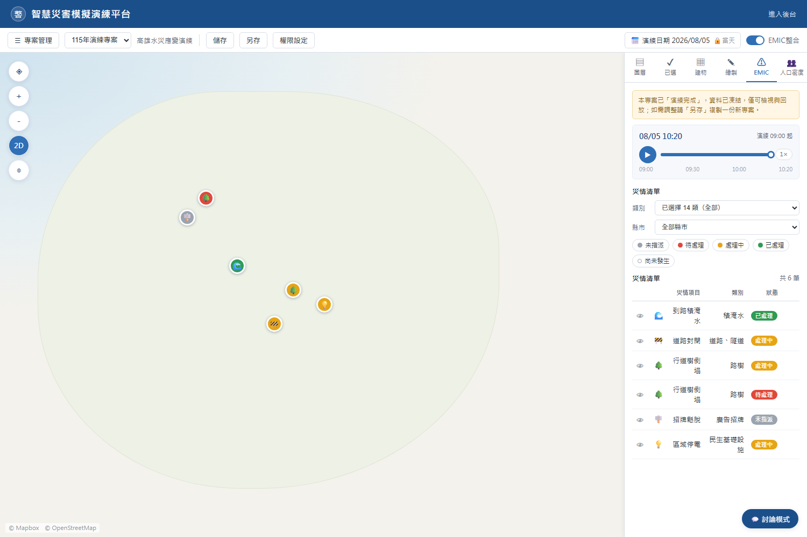
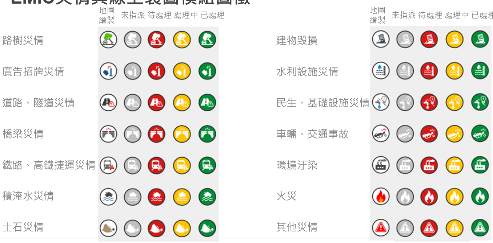

只講設計要決定的三件事：①要出什麼（畫面＋要交付的圖徵素材）、②不可以動什麼（欄位／互動／文案）、③非理想狀態也要出圖。欄位規則、業務邏輯、AC 不在這裡 —— 需要時看 03_規格文件/01_需求規格_EMIC災情_v2.md。本模組是既有前台平台的「EMIC」右側頁籤，整體風格沿用既有系統（深藍 header＋Mapbox 淺色地圖＋右側頁籤面板），不是新做一套。



3.3 點位詳情彈窗併於「演練中」：點點位或清單列彈出，內含 EMIC 全欄位＋附件下載連結，樣式比照既有系統彈窗。
14 類災情 × 5 版本的點位圖徵，是本模組最主要、也最需要設計定稿的素材。下圖為既有規劃稿，請以此為基礎產出可用於地圖的正式圖檔（含去背 / 尺寸規格）。

| 維度 | 內容 |
|---|---|
| 14 類災情 | 路樹／廣告招牌／道路、隧道／橋梁／鐵路、高鐵捷運／積淹水／土石／建物毀損／水利設施／民生、基礎設施／車輛、交通事故／環境汙染／火災／其他 |
| 每類 5 版本 | 地圖繪製版（無狀態框，供線上製圖模組共用）＋ 4 狀態色版 |
未指派＝灰 待處理＝紅 處理中＝黃 已處理＝綠
此圖徵與「線上製圖模組」共用同一套，請確保兩模組使用一致的圖檔，不要各出一版。
| 狀態 | 畫面表現 |
|---|---|
| 演練前（待演練） | 面板只有引導提示、無災情（見 3.1） |
| 此時間點／篩選下無災情 | 清單空狀態文字「此時間點／篩選條件下無災情」、地圖無點位 |
| 點位「尚未發生」 | 播放器時間點早於案件發生時間：地圖不顯示、清單狀態欄顯示「尚未發生」（狀態圖例有此一項，樣式為白底描邊） |
| 刪除二次確認 | 確認對話框（含災情項目名稱） |
| 演練完成（唯讀） | 唯讀橫幅、隱藏結束演練與刪除鈕（見 3.4） |
| 點位無附件 | 詳情彈窗不顯示附件區塊 |
交付物僅需這一夾（04_設計稿/）即可作業，圖都在 04_設計稿/圖/。有疑義先問 PM，勿逕自變更欄位或流程。